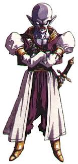
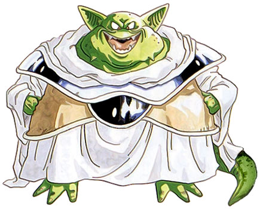

Descrição dos Personagens
Flea é um dos capangas de Magus, com uma aparência de demônio e habilidades baseadas em magia. Flea é conhecido por sua personalidade excêntrica e seu papel crucial na batalha contra o grupo de heróis.
Slash é o guerreiro de Magus com uma habilidade impressionante com espadas. Ele é conhecido por seu estilo de luta agressivo e sua lealdade a Magus. Slash é um adversário formidável no campo de batalha.
Ozzie é o líder dos capangas de Magus, um mago sombrio com uma aparência excêntrica e habilidades mágicas poderosas. Ozzie é o mais velho dos três e tem um papel importante na trama, sendo o principal responsável por alguns dos eventos que ocorrem durante o jogo.